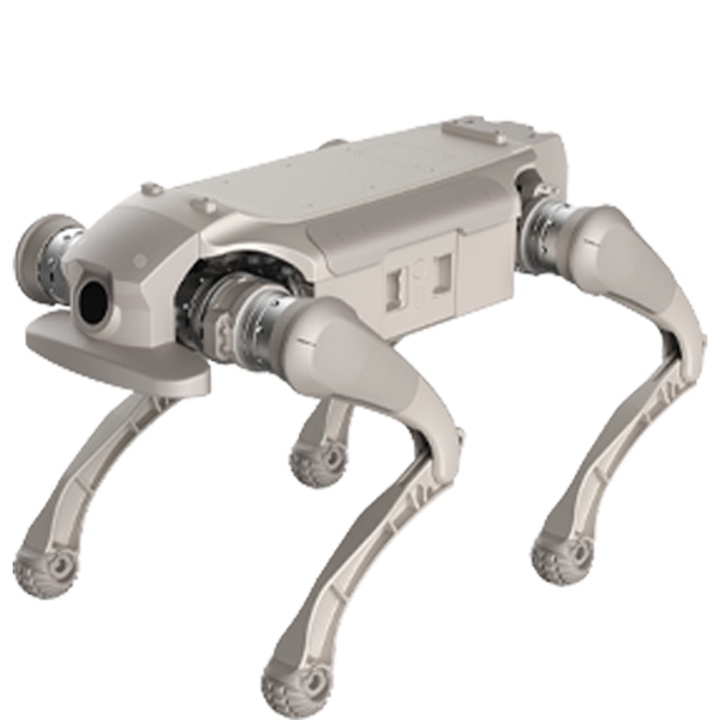
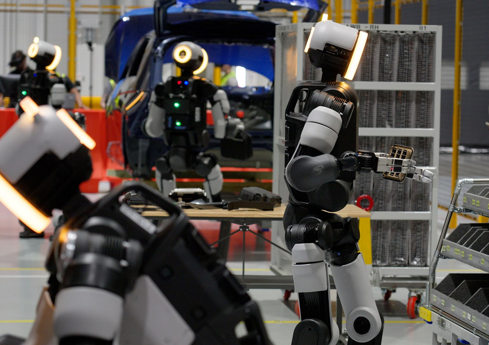

人形脉冲
本周政策侧以标准征求意见收官与场景征集截止压实「可核验落地」，产业侧则把长隆超三百台常态化部署与弗里蒙特周产数百台并置对照：前者检验文旅大客流下的运维与网络底座，后者暴露泛化与灵巧手可靠性瓶颈。编辑判断：数贸会与京津冀智造基地同期推进，订单与产线叙事须与第三方工时、失败率同屏阅读。

国内政策
工信部《国家人形机器人产业标准体系建设指南（2026版）》征求意见公示收官
8月24日发布的征求意见稿公示期为2026年8月25日至9月23日，本期窗口首日即为截止日；意见可发至 kjbz@miit.gov.cn（邮件主题须注明指南反馈）。指南提出到2028年建成协调配套标准体系，在能力测试评估、关键技术、平台系统、场景应用、安全治理等方面完成至少100项关键标准制定。编辑判断：与第三批行业标准中灵巧手接口规范等条目形成上下位衔接；截止后应跟踪正式稿发布节奏及 WG 分工，而非把「征求意见」误读为体系已生效。
工信部
广东省「机器人+」具身智能典型场景案例：线上申报截止 9 月 24 日
省工信厅面向全省已实景落地的具身智能机器人案例开展征集，覆盖制造、医疗、物流、养老、教育、商业社区、政务文旅、居家康养等八大领域。申报主体须于9月24日前在「广东省数字工信平台」完成材料上传，地市审核推荐截止10月10日。编辑观点：截止日落在本期窗口内，实质是把「能演示」倒逼成「能交付、能复盘」的清单；后续应跟踪入选案例是否进入部委推广与采购口径，并与横琴等地先行截止的转发通知对照口径差异。
广东省工业和信息化厅
「十五五」自然资源发布会：地理信息公共数据赋能具身智能等新兴产业
9月22日，国务院新闻办公室举行「开局起步『十五五』」系列发布会，自然资源部负责同志介绍「十五五」时期自然资源保护利用安排。通稿援引副部长周星表述：「十五五」期间将深化实景三维中国应用和时空智能科技攻关，推动卫星导航定位基准站网、天地图等公共数据资源授权运营，加快释放地理信息数据要素价值，更好支撑智能驾驶、低空经济、具身智能等新兴产业发展，并披露地理信息产业从业单位已达27万家。编辑判断：这是国家级数据要素口径对人形/具身赛道的间接约束，价值在授权运营与基准网能否转化为可计费训练数据，而非单句产业点名。
新华社
横琴合作区：「机器人+」具身智能案例征集区内截止 9 月 22 日
合作区产业发展局9月11日转发广东省工信厅通知，要求申报主体登录「广东省数字工信平台」上传《2026年广东具身智能典型应用场景案例申报书（具身智能领域）》等材料，并于9月22日前完成全部材料上传（省级统一平台截止日为9月24日）。征集面向已实景落地、具备较高技术水平和显著应用成效的具身智能机器人案例。编辑观点：区内提前截止体现属地初审节奏；对整机企业而言，应同时满足合作区与省厅两套时间节点，避免仅盯省级截止日而错失推荐资格。
横琴粤澳深度合作区
国外前沿
arXiv：HuGo 以 LLM 生成全身 loco-manipulation 高层策略代码
9月24日提交（arXiv:2609.30594）。HuGo 在冻结低层全身策略之上，用大模型据任务描述生成可执行、闭环的高层策略代码，并据 rollout 数值轨迹与视频帧迭代修正；作者称在五个仿真任务、两套低层策略上显著优于手工奖励的高层 RL 基线，且仿真策略可零样本上硬件，真机三轮 refinement 可将成功率从约20% 提至约90%。编辑判断：价值在「换任务换代码」而非换奖励/示教；瓶颈仍在低层策略能力边界与长程 clutter 下的代码可靠性。
arXiv
arXiv：BeyondRetarget 从单目视频端到端学习可执行人形动作
9月24日提交（arXiv:2609.29850）。框架跳过显式人体中间表示，直接从单目 RGB 学习面向机器人的隐式表征，并以接触感知运动优化提升时序一致性与物理合理性。作者报告在仿真与真机上相较两阶段 retarget 流水线具有更高精度、鲁棒性与执行成功率、更低延迟。编辑观点：若视频—动作链路可规模化，将降低动捕成本；仍待独立团队在多样本体与长序列任务上复现真机指标。
arXiv
arXiv：Echo in the Steps 以门控记忆实现感知型人形跑酷
9月24日提交（arXiv:2609.28960）。工作面向稀疏落脚点与窄支撑面，提出显著性引导时序感知模块（显著性先验+门控记忆）在帧间保留有效深度特征，并以 alternation loss 鼓励交替步态。作者称在仿真与真机挑战性地形上显著提升成功率与落脚点精度，且仅依赖 onboard 深度观测。编辑判断：跑酷动态稳定性与工厂分拣可靠性指标不同，但跨帧深度记忆对弱纹理工业地面同样值得跟踪。
arXiv
Phys.org / Tech Xplore：TANGO 全身 VLA 在 clutter 中零样本真机穿行
9月23日，Tech Xplore 报道 UC Berkeley 与 Princeton 等团队工作 TANGO（预印本 arXiv:2609.09158），以 egocentric RGB 与语言指令直接预测 29-DoF 关节动作，在仿真中训练后在 Unitree G1 上对 clutter 室内场景做零样本部署。报道引述作者称相较模块化基线在需协商障碍的场景表现更优，且仅依赖 RGB。编辑观点：报道日期在本期窗口内，技术细节须回链预印本；产业意义取决于语言导航在工厂/仓内非结构化通道的可迁移工时，而非单次窄缝演示。
Tech Xplore
重点新闻

本期主条
智元 × 长隆：超 300 台具身智能机器人在飞船乐园常态化上岗
9月24日，智元与长隆集团在珠海横琴长隆飞船乐园启动大规模具身智能部署，300余台机器人覆盖文娱商演、科普研学、导览导购、零售、智能伴游、酒店与体育竞技等场景，并交付第20000台下线机器人。通稿强调专用连接、多机协同与安全系统，并与长隆共建文旅联合研究院及与中国移动的 5G-A 创新应用。编辑判断：这是迄今可核验的单点最大文旅常态化部署之一，但大客流、强互动场景的故障率与运维人力仍未见第三方统计，不宜把开园热度直接外推为可复制模板。
AGIBOT
报道：特斯拉弗里蒙特 Optimus 周产升至数百台，泛化与手部仍承压
9月25日，Electrek 援引 The Information 称，特斯拉弗里蒙特 Optimus 产线已由二季度每周数十台增至8月以来每周数百台，管理层目标年底连续自动化线超1000台/周；多数下线机用于内部测试与数据采集，产线内作业仍限于受控区域与特定任务。报道同时指手部含100余螺钉/小件、供应商良率与 AI 泛化不足，基础任务学习仍 reportedly 需数日。编辑观点：产能阶跃可核验性取决于后续股东信或监管披露；与广东文旅部署对照，特斯拉瓶颈在「造出来」之后「干什么」的工时与返修。
Electrek
Boston Dynamics：佐治亚 RMAC 训练 Atlas 服务现代汽车产线物流
9月21日，Boston Dynamics 宣布在 Hyundai Motor Group Metaplant America 启用 Robotics Metaplant Application Center（RMAC），作为 Atlas 融入汽车制造的测试与训练场，初期任务为零部件物流排序，并规划2030年扩展至部件装配；现代集团此前口径拟在韩美工厂部署约25000台 Atlas，并建设年产能约3万台的新工厂。9月下旬行业媒体跟进称中心已由试点转入全面运营。编辑判断：官方稿任务边界诚实（排序物流而非炫技装配）；应跟踪2028年 HMGMA 排序上线节点是否滑动，而非仅看 CES 口径。
Boston Dynamics

优必选京津冀具身智能机器人智造服务基地在天津静海开工
央广网9月25日报道，9月22日优必选京津冀具身智能机器人智造服务基地项目在天津市静海区开工，定位为研发—制造—应用—服务全环节与上下游全链条集聚；现场发布「智造工厂、数据工厂、人才工厂」及优必选服务平台战略。报道援引天津市工信局推进实景实训专项行动及《天津市智能机器人产业创新发展行动方案（2026—2028年）》目标：到2028年底建设不少于20个实景实训空间、形成100个以上示范应用场景。编辑观点：与柳州万台级工厂形成南北产能对照；关键在静海基地能否输出可计量的实景数据与工时，而非开工仪式本身。
央广网
第五届全球数字贸易博览会开幕：杭州具身智能订单与产业链同台
9月23日至27日，第五届全球数字贸易博览会在杭州举办，17万平方米展馆、超2000家参展企业。杭州政协网9月28日观察稿称，人工智能展区以具身智能为主线，清洁、缝纫、灵巧手与协作多机等细分场景集中亮相，并提及国家人工智能应用中试基地（具身智能）在杭州启用及《杭州市促进具身智能机器人产业发展条例》等制度背景。编辑判断：展会订单与意向须与交付、可用率分开记账；稿件价值在把「机器人挤人」还原为场景细分与产能爬坡，而非单点爆款叙事。
杭州政协网
第五届数贸会 AI 展区：细分场景意向订单与产能爬坡引关注
9月24日，中国证券报实探稿称第五届数贸会9月23日开幕，人工智能企业996家参展；现场可见高自由度灵巧手、协作具身多机接力长程任务、国产 AI 算力芯片等从实验室走向可体验形态。报道引述参展企业称清洁机器人等细分场景持续获得订单与产能爬坡压力。编辑观点：与杭州政协网稿件相互印证「小场景、大订单」主线；对读者而言，应要求企业披露连续运行工时与故障间隔，而非仅公布意向订单金额。
中国证券报